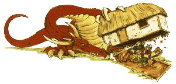
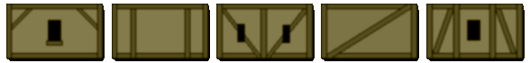
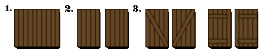
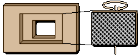
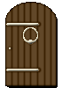
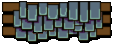

| |
Hogyan
készítsünk házat

Itt a
modellház elkészítésérõl olvashatsz bõvebben.
Azonban ezen cikk nem egy konkrét épület elkészítésének
lépéseit taglalja, hanem olyan általános útmutatót
ad, amelynek ismeretében mindenki könnyen és
egyszerûen készítheti el saját elképzeléseit!
Éppen ezért szétbontottam részeire egy házat,
és minden résszel külön foglalkozom. Ilymódon
mindenki azt az elemet használja majd fel majdani
háza megépítéséhez, ami a legszimpatikusabb
neki.
Elsõ lépésként ki kell gondolnunk,
hogy milyen házat is szeretnénk! Rengeteg féle
koncepció létezik: csinálhatunk földszintes házat,
emeleteset, kõházat, faházat, stb... Itt
szabadjára lehet engedni a fantáziánkat. A lényeg,
hogy maradjunk meg a klasszikus középkori épületeknél,
hisz Öregvilág épületei is ilyenek.
A fal:
Ha megnézel egy ábrázolást vagy képet
Óvilágról, látni fogod, hogy itt a házak
falait jellegzetes fa lécek tarkítják. Ezek sajátos
hangulatot kölcsönöznek az épületeknek. Álljon
itt pár példa ezek lehetséges elrendezõdésérõl
(persze nem az összes, csak néhány, hogy
mindenki eltudja magának képzelni) :

Most térjünk rá a fal gyakorlati
megvalósítására! Miután tetszõleges anyagból
(fa, hungarocell, gipsz, stb.) megformáltuk a ház
falát, tegyük azt érdessé! Erre folyékony
ragasztót használunk, amit összekeverünk finom
szemû homokkal és ezt a masszát vékony rétegben
felkenjük a fal egész területére. Két dologra
kell vigyázunk:
1. Ha hungarocellt használunk,
akkor arra, hogy bizonyos ragasztók és a Citadel
alapozók is oldják.
2. Arra, hogy megfelelõen finom szemcséjû
legyen a homok, mert ellenkezõ esetben túl érdes
lesz a felület, ami semmiképpen sem jó! Ha kell
szitáljuk le a homokot. Olyasmi legyen az állaga,
mint a finomszemû sóé!
Szûkségünk lesz körülbelül 1-0.5
milliméter vastag fadarabokra, amiket a kívánt
elképzelés szerint méretre vágunk. Ezek
lesznek a lécek a falon. És, hogy honnan lehet
ilyet szerezni? Én a barkácsboltokban kapható
1*1 centiméter vastag fapálcát vagdostam fel
ilyen vastagságúra egy éles késsel. Ez
célravezetõ, ám igen veszélyes mûvelet,
mindenki csak a saját felelõsségére csinálja!
Ha megszáradt az érdesítõ felület,
akkor valamilyen erõs ragasztóval a kívánt
helyekre ragasztjuk a fahasítékokat. Jól
nyomjuk rá, hogy ne legyen rés a fal és a lécek
között! Ha nincs más a falon (ablak, ajtó,
stb.), akkor már csak a kifestés van hátra:
Alapozzuk le a modellt tetszõleges színû
alapozóval! Ezután gondoljuk ki, hogy milyen színûre
szeretnénk a ház falát, majd ennek a színnek a
sötétebb árnyalatával fessük be az érdes részeket.
Ezután szárazecset (drybrush) technikával (bõvebben
lásd. a festési útmutatóban) vigyük fel a
falra szánt eredeti színt! Végezetül, ha
gondoljuk, akkor vízzel bõven hígított barna
festéket viszünk azokra a helyekre, ahol szeretnénk,
hogy megviseltnek nézzen ki a fal (a hasábok köré,
tetõ alá. stb.). Majd egy vizes ecsettel szépen
belemossuk a fal színébe! És, ha szükséges,
akkor ezt is drybrush-oljuk! Ezzel nem lesz a házunknak
olyan hatása, mintha frissen lenne mázolva, ami
ugye nem igazán jellemzõ Óvilág épületeire!
A faléceket pedig természetesen barnára kell
lefestenünk, a széleken kicsit világosabban kihúzva!
megjegyzés: Bár a fenti példa a
leginkább jellemzõ Óvilágra, de természetesen
nem csak ilyen falak léteznek! A házak földszinti
része például általában kõbõl van és egyáltalán
nem minden házon vannak jelen ezek a fa lécek.
Inkább az emeleti részekre jellemzõ.
Ablakok:
Minden házon van ablak. Rengetegféle
ablaktípus létezik és rengetegféleképpen
lehet díszíteni (lécekkel körberakni, párkányt
ragasztani neki egy vastagabb lécbõl, stb., de
ezekre nem térnék ki, ezt mindenkinek a saját
fantáziájára bízom. De, hogy magát az ablakot
hogyan csináljuk meg, arra leírok pár lehetséges
megoldást:
1. A legegyszerûbb,
hogy kivágjuk az ablak helyét, kb. 2 mm mélyen
és egyszerûen feketére festjük az rés
belsejét! Ez a megoldás remekül alkalmazható például
keskeny lõréseknél, de nagyobb ablakoknál, már
nem jó megoldás!

2. Jó megoldás lehet,
ha egyszerûen ablaktáblákkal fedjük be. Itt
szintén kivágjuk az ablak helyét! Összeragasztunk
pár gyufaszálat és kivágjuk az ablak méretével
megegyezõen! Utána elfelezzük és tetszés
szerint vagy srégen vagy egyenesen egy-egy vékony
(1 mm néha már sok) gyufaszálat ragasztunk fel
rá! Így megkaptuk a két ablaktáblát.
Alapozzuk feketére, majd fessük be barnára, ügyelve
arra, hogy a lécek közti rések feketék
maradjanak! Fessük be az ablak mélyedését is
feketére, majd ragasszuk be a két ablaktáblát!
Itt lehet még variálni félig nyitott táblákkal,
stb. Fentebb megtalálod a lépéseket, képekkel
illusztrálva!
|
3. Vágjuk
ki az ablak nyílást 2 mm mélységben!
Majd belülrõl is vágjuk ki, de
nagyobb területen! Fogjunk egy vékony
(kb. 1-2 mm vastag) sima felületet és
fessük le feketére. Majd miután
megszáradt, ragasszunk fel rá tetszõleges rácstávolságú, fém rácsot!
Majd ezt ragasszuk be a nagyobb mélyedésbe,
hogy a rácsos fele kifelé nézzen a házból.
A könnyebb érthetõség kedvéért
jobb oldalt van egy kép! |
 |
Az ajtó:
Az ajtóknak sok fajtája létezik! Van
egyszerû téglalap alakú, van ovális tetejû, kétszárnyú,
stb. Ám az elkészítési módja mindegyiknek
megegyezõ:
Elõször is ki kell vágnunk az ajtó
helyét! Ezt vágjuk minden oldalról fél
centivel nagyobbra, mint az ajtó tényleges mérete!
Majd 5 milliméter széles fahasábokat ragasztunk
az ajtó mélyedésének oldalaiba, úgy, hogy 1-2
mm-re kilógjanak a fal síkjából. Ez lesz az
ajtófélfa! Ezt barnára festjük, az ajtó helyét
pedig feketére. Majd az ablaktáblánál leírtak
szerint járunk el, csak itt egy ajtót csinálunk!
Lealapozzuk feketére, és a rések feketén hagyásának
figyelembevételével lefestjük barnára! Ezután
ragasszuk be a helyére! Jól néz ki, ha az ajtópántokat
nem barnára festjük, mint az ablaktáblánál,
hanem fémszínûre!
|  |
megjegyzés: Ragaszthatsz
pajzsot az ajtóra vagy egy kisméretû
karika fülbevalóból nagyszerû ajtókopogtatót
lehet csinálni! Fogjunk egy sima mûanyag
gyöngyöt, aminek lyuk van a közepén
(olyat amibõl azokat az állatkákat
szokták csinálni a lányok)! Ilyet rövidáruboltokban
lehet kapni. Fûzzünk fel egy darabot a
fülbevalóra, és a gyönggyel lefelé
ragasszuk fel az ajtóra. Ezután fessük
fémszínûre! És, ha levágjuk egy
gombostû fejét és azt ragasztjuk oda,
máris megvan a kilincsünk! De akár kémlelõnyílást
is vághatsz bele! |
A tetõ:
|
A tetõnek az oldalait (a háromszögletû
függõleges részt oldalt) ugyanúgy
csináljuk meg, mint a falakat, deszkákkal
és érdesítéssel! Majd a közöttük
lévõ részre, ahova a cserepek jönnek,
ragasszunk egy sík felületet. |
 |
megjegyzés: Kicsit meseszerûbb, de
ugyanakkor látványosabb hatást érhetünk el,
azzal, ha a tetõ két síkja nem teljesen
egyenes, hanem kicsit homorú! És a tetõgerinc
is lehet kicsit hajlított!
Magát a cserepet vékony kartonpapírból
állíthatjuk elõ, körülbelül 10*5 mm-es
darabra kell vagdosni! Nem kell, hogy tökéletesen
egyformák legyenek, mert akkor néz ki jól a tetõ,
ha összeissza állnak a cserepek! Ezután szépen
módszeresen, soronként alulról felfelé haladva
befedjük cseréppel a tetõt! Egyik sorra lógjon
rá a másik és így tovább, amíg össze nem érnek
felül! Legvégül pedig a tetõ gerincére egy
olyan sort ragasztunk, aminek az elemeit félbehajtottuk,
hogy illeszkedjen a tetõ hajlásszögéhe. Ezzel
eltakarjuk az utolsó sor cserép felsõ szélét.
Kifestésként le kell festeni a
cserepeket arra színre, ami nekünk tetszik, majd
ennek a színnek a sötétebb árnyalatával vékony
vonalakat festünk a cserepek találkozásához, a
világosabb árnyalatával pedig a széleikre!
Esetleg a tetõ színének megfelelõ bemosóval (Citadel
washes) átkenhetjük. Nemcsak piros cserepek
vannak, hanem elképzelhetõ kék vagy egyéb változat
is.
Kiegészítõ lehetõségek:
Lábazat: Feldobja az épületünket,
ha lábazatot csinálunk neki! Több féle módszer
is ismeretes. Például beragasztózhatjuk az épületünk
alsó részét, ahol a lábazatot akarjuk és rászórhatunk
nagyon apró kõtörmeléket. Vagy 1 mm vastag,
kb. 1*1 cm alapterületû fadarabokat (esetleg
hungarocellt) ragasztunk rá és aztán ezt szintén
érdesítjük, majd a faltól elütõ, szürkés
színûre festjük le. Ezzel olyan hatás érhetõ
el, mintha nagy kõlapokból lenne a lábazat.
Ereszcsatorna: Egy egyszerû szívószálból
remek vízelvezetõt lehet csinálni! Erõsítsd
fel a ház sarkára. Rögzítsd ragasztóval a kívánt
helyzetben, majd fesd le fémszínûre! Roppant
egyszerû, és roppant dekoratív megoldás!
Kõlapok, fa helyett: Fa lécek helyett,
néhol (általában a földszinten), jól mutat,
ha kövek vannak a sarkokban. Ilyet úgy
tudsz csinálni, ahogy a lábazatnál volt írva
és ezeket ragasztod fel a házad sarkaira. Érdesíted,
majd kõszínûre fested.
Egyéb díszítések: Ereszd szabadjára
képzeleted és helyezz el mindenféle egyszerû
dolgot házadon. Egy létra a tetõre erõsítve,
például nagyon feldobja a házat! Egy Saurus
warrior fejébõl remek vízköpõ lesz!
Ragaszthatunk a falra pajzsokat! Esetleg csinálhatsz
a háznak kéményt. Vagy lépcsõket az ajtóhoz,
stb. Rengeteg dologgal fel lehet dobni a házadat!
Nos, eme cikk elolvasása után remélem
mindenki kedvet kap majd egy kis házacska elkészítéséhez
írta: Rince
|
|